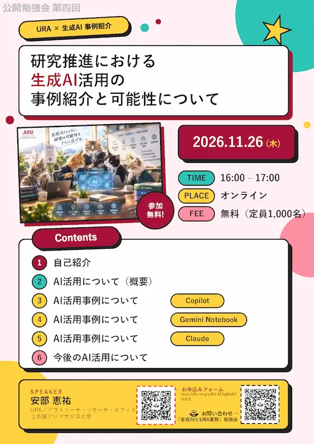

公開勉強会第四回「研究推進における生成AI活用の事例紹介と可能性について」開催のお知らせ
RA協議会スキルプログラム専門委員会公認テーマ別勉強会 「生成AIとURA業務」 では、生成AIに関心のある研究支援関係者を対象に、 公開勉強会第四回を開催します。
今回は、立命館アジア太平洋大学URA／アウトリーチ・リサーチ・オフィスの 安部恵祐氏 を講師としてお迎えし、 研究推進業務における生成AI活用事例や今後の可能性についてご講演いただきます。
Copilot、Gemini Notebook、Claudeなどの生成AIツールの具体的な活用事例を紹介いただくほか、 今後の研究支援業務におけるAI活用の展望についてもご紹介いただく予定です。
URAの方はもちろん、大学事務職員、技術職員、研究支援に携わる方など、 生成AIを業務に活用したいとお考えの皆様のご参加を歓迎いたします。

開催概要
- 名称：公開勉強会第四回「研究推進における生成AI活用の事例紹介と可能性について」
- 講師：安部恵祐氏（立命館アジア太平洋大学 URA／アウトリーチ・リサーチ・オフィス）
- 日時：2026年11月26日（木）16:00～17:00
- 開催形式：オンライン（Microsoft Teams）
- 参加費：無料
- 定員：1,000名
- 対象：生成AIの活用に関心のある方（URA、大学事務職員、技術職員、研究支援担当者等）
講演内容（予定）
- 自己紹介
- AI活用について（概要）
- AI活用事例について（Copilot）
- AI活用事例について（Gemini Notebook）
- AI活用事例について（Claude）
- 今後のAI活用について
参加申込
参加をご希望の方は、以下の申込フォームよりお申し込みください。
皆さまのご参加をお待ちしております。
お問い合わせ
RA協議会スキルプログラム専門委員会公認テーマ別勉強会
「生成AIとURA業務」
代表 神戸大学 渡邉洋輔
genai.ura.since2023■gmail.com
※■を@に変えてください。
関連情報
- 勉強会のイベント情報をメールで受信されたい場合は、 こちら から連絡リストにご登録ください。
＜ お知らせ一覧に戻る